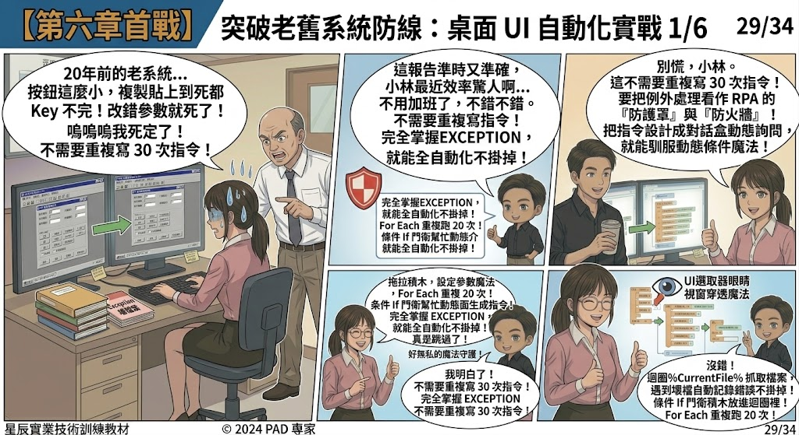
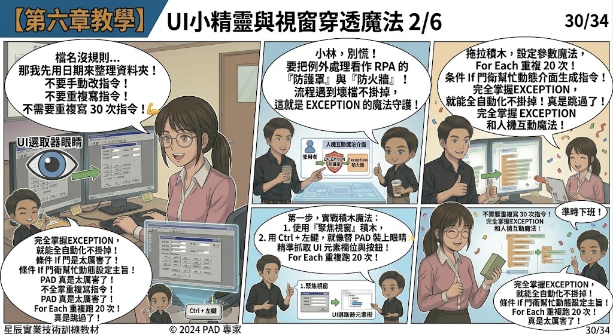
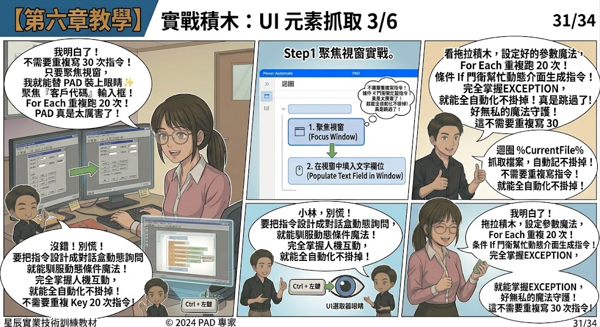
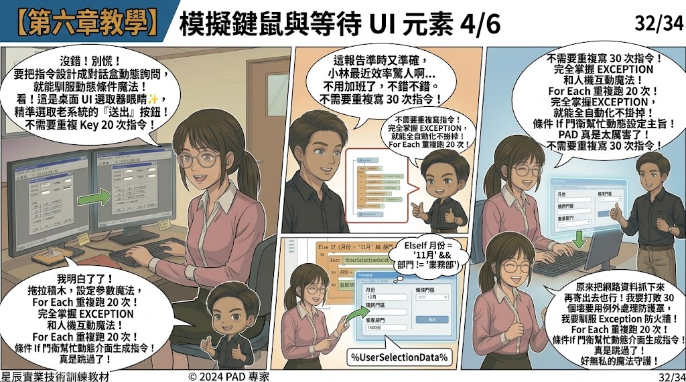
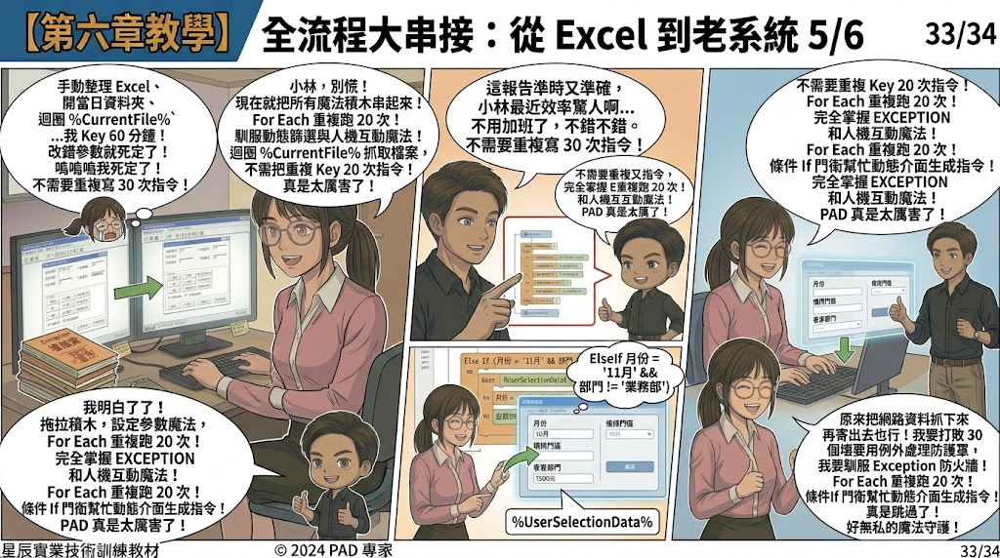

Author: Troy Su | Power Automate Desktop (PAD) & RPA Automation Expert
In the final showdown of workplace automation, the ultimate boss emerges: the dreaded 20-year-old Legacy ERP System!
The manager drops a stack of forms onto the desk: "Xiaolin! Input all consolidated price records into this legacy desktop database system! The buttons are tiny, the interface is ancient, and there is no modern API! Very urgent!"
Xiaolin gasps: "A legacy desktop app with no API? If I click the wrong coordinate or type into the wrong box, the data gets corrupted!"
Brother Mo smiles calmly: "Don't panic, Xiaolin. This is where true RPA shines! With PAD's UI Selector Eye and Window Focus Magic, we can manipulate any desktop application as easily as a human!"


Core Concepts: UI Automation & Window Element Targeting
1. UI Selector — Giving Eyes to Your Robot
In legacy software without APIs, PAD uses the UI Element Selector. By holding Ctrl + Left Click, PAD automatically inspects and locks onto UI controls (buttons, input fields, dropdowns, table cells) within the Windows desktop hierarchy.
2. Window Focus & Input Simulation
To ensure 100% precision regardless of window positions or screen resolution:
Focus window➔ Brings the legacy app to the foreground.Populate text field in window➔ Types values directly into target controls without relying on screen coordinates.Press button in window➔ Triggers the submit action reliably.


Step-by-Step Tutorial: End-to-End Grand Integration
- Focus Target Window: Add
Focus windowto target the legacy application title. - Populate Fields with Variables: Use
Populate text field in windowto map Excel variables (%CurrentRow['ClientID']%,%CurrentRow['Price']%) into corresponding text boxes. - Submit & Wait: Add
Press button in windowto click "Save/Submit", followed byWait for window contentto ensure database processing is complete. - Grand Integration: Combine everything we've learned across all 6 chapters:
- Ch.1–2: Dynamic Excel reading & For Each loops
- Ch.3: Web scraping & automated emails
- Ch.4: Dynamic date paths & On Error exception shields
- Ch.5: Custom forms for interactive criteria input
- Ch.6: Full desktop UI automation & unattended orchestration!

🎉 Series Graduation: A Workplace Automation Master is Born!
Xiaolin hits Run! In just minutes, PAD takes custom parameters, iterates 30 supplier files, skips corrupt items, inputs hundreds of records into the legacy ERP with zero errors, and delivers the finalized report to the manager's inbox!
The manager exclaims: "Incredible speed and 100% accuracy! Xiaolin, you're off the hook—no overtime needed!"
Xiaolin and Brother Mo clink their boba tea cups, celebrating true liberation from repetitive office drudgery. You, too, are now equipped with the complete Power Automate Desktop toolkit!